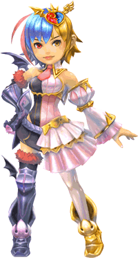

8 |
キャラクター紹介 |
 |
●ミラ ちょっと極悪なプリンセス！  １６歳の誕生日記念に、魔王に即位した“魔族”の姫君。 弱虫魔王として有名だったいまは亡き父・魔王を毛嫌いしており、「世界征服」の野望に燃えて、冒険者たちに宣戦布告する。 冒険者ばかりでなく、配下の執事や魔物たちさえも、こっぴどく痛めつけて、絶大なる魔王ぶりを発揮するのが大好き。 いわゆる箱入りのお嬢様なうえに、執事のトンベリーズによりワガママ放題に育てられたので、いったん怒り出すともう誰にも止められない！ その怒りにふれた者には、世にも恐ろしい「ベビーモス踏みつけの刑」が加えられるという。 |
●執事トンベリーズ
姫君ミラに長年仕えている、忠実な執事のトンベリたち。
トンベロ・トンズラ・ドンジリなど……。 コードネームで呼ばれているが見分けはつかず、構成員の人数も不明。どうやら、かわりばんこに休んでいるらしい。 ご主人様であるミラに、無理難題を命令され振りまわされたあげくに、こっぴどく、お仕置きされているが、まったくめげる気配はない。 噂では「みんなのうらみ」をためこんでいるとも……。 とある王国のエージェント集団「モーグリ兄弟」とは犬猿の仲である。 |

●トンガリ スーパーエリート執事！  執事軍団トンベリーズの最年少にしてリーダー。忠誠・献身・滅私奉公――ありとあらゆる執事のたしなみを身につけたスーパーエリートだが、その出自は不明。 一見、きぐるみに見えるが、実は本当にきぐるみかもしれない。 その中身には、一体何が入っているのか――？ |
 |
 |
 |